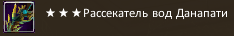
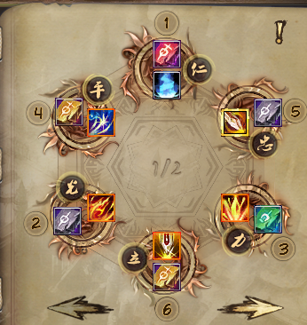

Гайд был написан в сентябре-октябре 2025 года.
Перед сражением баффаемся этими скиллами:
Таинственной мантрой клинка баффаемся под обеими пухами, для достижения максимальной эффективности.
Когда льём босса, применяем последовательно:

Да, именно в такой последовательности.
Запал кидаем с ПЗ-пухой. или 
А затем - подменяем на основную.
Рекомендую выставить на панель основную и ПЗ-пуху, чтобы по кнопкам их быстро переключать.
В ХХ 4-1 на первом боссе лучше кидать запал под иммункой, чтобы мистик его не рассеял.
Затем баффаемся "Великим сиянием меча" для 85% пения.
Затем используем последовательно:

В "Великий закалённый меч" - сапфировую руну, чтобы порезать физ. деф.
В "Великое невидимое лезвие" - золотую руну, чтобы временно существенно повысить урон в PvE.
В "Пань Гу - Великий меч-ветрогон" - серебряную руну, чтобы была большая порезка ПЗ у босса.
Если в пати нет сина, то в это же время используем на джинне яд и, если есть, ярость (их можно назначить для удобства на Shift+Fn, нажав на клавишу K и пролистав вниз до умений джиннов).
Затем используем основной макрос (в следующей секции рассказывается о них подробнее).
Макросов делаем два: один обычный (основной), для общего применения (1):

Для физ. иммунов и ситуаций, где нужно много бить массом (2):


Отдельно отмечу таинственную транспозицию , которая позволяет перетянуть к себе другого персонажа. Для её использования кидаем дуэль, затем применяем транспозицию, меняя местами персонажей, а затем - "Великий меч императора" , чтобы притянуться самому. Хорошо помогает в ГШ в том месте, где нужно бегать в лабиринте. Можно перетягивать других в нужное место или самому притягиваться "Великим мечом императора".
В идеале для PvE - Тай Шанг, так как у него есть базовый скилл на восстановление ци.
Если имеем Тай Шанг, то в скиллах главное - слово истины, чистая сфера и уверенка. Рекомендую также защитник. Остальное - на своё усмотрение.
Если нет Тай Шанг и не ходишь на 4 этап КХ, то можно не ставить уверенку, а лучше прокачать восстановление ци. На моей практике оно пригождается чаще. Для 4 этапа КХ можно сделать отдельного джинна с уверенкой, но нужно не забывать вовремя их свапать.
У стража есть 3 самохила:
Если стражей в пати двое, то можно договориться о том, кто кидает запал (обычно тот, у кого больше показатель защиты (ПЗ)). Если запал кидает другой страж, то можно активировать его на себя, не перекидывая. Если босс пробивается дольше 15 секунд (хотя сейчас это редкость, но, например, в ПП такое бывает), а стражей в пати двое, то запал чередуют: вначале кидает один, а потом - другой. Снова же, можно договориться, кто первый. Значок дебаффа у запала такой:
В ДР дракона открывает обычно прист печатью Бога с серебряной руной . Но син и страж в связке тоже могут это сделать. Перед тем, как ПЛ запустит дракона, син кидает стражу дуэль (или наоборот), син кидает аркан на стража, а тот после этого кидает на дракона "Божественный блуждающий призрак" , который переносит аркан на дракона.
Идеально, если страж ещё успевает применить и запал, это не помешает, но если есть опасения запутаться, то лучше кидать только перенос.
Добавлю, что если син кидает аркан, но при этом дебафф на страже не появляется, то у сина может стоять изумрудная руна в аркане. Нужно попросить его убрать её оттуда или заменить.
На 2-м боссе в ПП нужно сбивать каст, не давая боссу ронять клинки на сопартийцев. В этом нам поможет "Великая мощь яростного медведя" , которая с изумрудной руной позволяет с высоким шансом (5-7 руна - 80%, 8-9 - 90%) сбить этот каст. Альтернативно можно поставить в джинна скилл "Землетрясение" и сбивать каст им, там шанс 100%, но откат дольше.
Иногда удобно пробивать боссов в пристовскую печать Бога с серебряной руной, чтобы заранее дать раздебафф (но в данном случае это не является необходимостью, как на драконе в ДР). Так делают в тех данжах, где не хватает дамага, чтобы пробить босса сразу. В этом случае печати страж может кидать сразу (хотя мне говорили, что лучше - секунд за 10 до окончания действия печати приста), а запал - условно за 3 секунды до окончания действия печати.
Замечание: после обновления в июне 2025 я не видел, чтобы так делали. Возможно, нет необходимости или механику боссов изменили.
В бюджетном варианте у стража 70 ПА домопуха и р8р2 пуха . Далее есть 2 варианта развития: